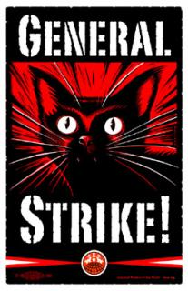

Wisconsin: What now?
Submitted on Sun, 06/19/2011 - 1:30pm
By Juan Conatz - libcom.com, June 19, 2011
Last week, the Wisconsin Supreme Court overruled a lower judge's injunction against the collective bargaining law, allowing it to go into effect at the end of this month. The budget bill also passed the assembly and senate, marking it a twin defeat for the movement here that emerged in February.
It was April since the last time I wrote on what was going on in Madison, so this is a rough update of what has developed since then.
Supreme Court Election
As the cries for 'general strike' died down and became limited to smaller far left groups and isolated public sector workers, the strategy, tactic and rhetoric of the recall and Supreme Court election achieved almost absolute dominance.
Although the April 4th 'Day of Action' called by the AFL-CIO was worded vaguely enough to warrant a number of different interpretations1, in Madison, it was the equivalent of a get out the vote rally. Union leaders and even Jesse Jackson was wheeled out to give their canned speeches telling us to fight for our rights through the ballot box to vote for liberal Supreme Court candidate JoAnne Kloppenburg. Even MLK and the Memphis sanitation workers' memory was brought up.2
In the end, despite significant outpouring by the Democratic Party, the unions and their volunteers, Kloppenburg lost in a heavily contested vote that included a recount and accusations of voter fraud.
Recall & Demobilization
In tandem with the Supreme Court election mobilization, volunteers hit the state trying to get signatures to file for a recall election against several Republican state senators. The daily rallies trickled down to weekly rallies, which then became biweekly rallies. There was a near demobilization, as the collective bargaining law was hung up in the courts and the demonstrations attracted fewer and fewer people. Unions stopped busing people in from around and out of state. People stopped traveling to Madison on the weekends. The various groups stopped bringing speakers in. The meetings of the activist coalition groups seemed to stall as well, with a general feeling of 'What now?'.
UW-Madison Occupation
While much of the attention has been on the collective bargaining aspect of the situation in Wisconsin, students have had their own issues with the various budget proposals. One of the most important was the possibility, backed by the UW-Madison Chancellor, of splitting UW-Madison off from the rest of the UW system.
After a couple months of discussion, a group of students occupied part of Bascom Hall, a building where traditionally occupations have occurred. Although there were hundreds at the preceding rally and at the initial occupation, after talking to the Chancellor, their numbers declined and a long discussion began on whether they were going to try and spend the night.
A group of faculty, union staff and some from the various socialist groups argued against staying over "strategic" reasons as well as the low numbers, while others argued for staying, saying it was a wasted effort if the attempt wasn't made. A vote happened, and a majority were for staying. Later another vote happened which the majority were for staying even if the police told us to leave.
After a series of university officials came and talked to us and realized we weren't going to leave, the police were called. The expectation was that the police would be calm and understanding, if not friendly, and we would be able to stay the night. For most people during the protests, their experience with law enforcement was a positive one, with police being mostly hands off. Unfortunately for the occupation, this would not be the case. Around 30 officers, almost matching the number of occupiers, gathered outside while one came in and ordered us to leave, giving us 60 seconds to decide or be arrested. Being caught off guard by this firm attitude, the decision was an unanimous vote to leave. The occupation ended on the first day.
May Day
Since 2006, arguably the last general strike3 the United States has seen, May Day has seen declining numbers for the numerous immigration rights rallies across the country. Even in Madison, which has had a May Day tradition going back decades, in recent years, turnout was low.
With the collective bargaining bill, though, May Day took on a larger significance, and thousands marched from a couple of miles away to the capitol. It was one of the larger protests since the demobilization began and one of the most diverse, in contrast to the often mentioned 'very white' composition of the crowds since February.
Unionization Efforts at Universities
Ironically, in response to the Governor's bill, faculty at a number of universities have voted to join unions since February. In March, both UW-Green Bay and UW-Superior did exactly this, in lopsided votes.
Right-Wing Response
On April 5th, the election day, which saw higher than usual turnout, the right wing got to the polls, more effectively than the left. It's hard to remember this in the liberal bastion of Madison, but the response to the Governor's bill is not the same in the rest of the state. Outside Madison, Milwaukee, the Superior area and the dairy counties, the state went for Prosser, the Supreme Court incumbent, widely seen as an ally of Walker and a conservative. Rallies and protests were also less common, if not non-existant, in other areas, with Madison being the epicenter due to its tradition of political protest, being a university town and containing the state capitol.
While it doesn't seem to get as much attention, variants of the Tea Party have appeared every now and then, attempting their versions of trolling in real life. They have purposefully marched through anti-bill protests with pro-Walker and anti-union signs. Camera people follow close behind, looking to capture some type of violence directed their way, in hopes of getting it aired on Fox News and promoting the 'union thug' discourse.
Conservative groups also filed requests to reveal the names of all the teachers who called in sick during the teacher sick-out job actions back in February.
Walkerville
Mimicking the Hoovervilles of the Depression era, protesters set up tents and camped out across the street from the capitol building. Anywhere from 50-350 people, depending on the way, could be seen camping out.
Disruption of Joint Finance Committee
On June 2nd, a group organized by Voces de la Frontera, disrupted a Joint Finance Committee meeting on the budget at the capitol. Protesters walked up continuously, shouting a prepared statement. Around 30 were removed and a few arrested. A senate Democrat told them "You could be doing more harm than good," while other Democrats urged the protesters to let the meeting go on uninterrupted.
The action was fairly controversial, with Twitter aflame with condemnations from liberals and articles on a local newspaper's website publicly disagreeing with the disruption. Even one of the student organizations, which was formed out of the capitol occupation and whose members have participated in nearly everything here, put out a statement nearly condemning the action and threatening expulsion of any members who had been involved.4
Failed Blockades
On June 6th, one of the coalition groups planned to blockade the streets entering the capitol square. The plan failed to materialize mostly, and where it did, it failed miserably.
This coalition group was mostly made up of some union staffers, union local elected position holders, nonprofit staff, students from the various university organizations, rank and file public sector union workers and some from the various socialist groups and the IWW. The coalition group became one of the more active ones as others became less active or were seen as AFL-CIO fronts, Green Party-type/older activist dominated or not receptive to non-recall activities.
At some point, a plan to blockade the capitol square came up within this group and efforts to accomplish this started. However, it seemed those who were involved in the planning of this had little experience doing these kind of actions and a number of preventable mistakes happened that contributed to an overall failure. There was also a lack of support from the unions, with one response to participating in the blockades with tractor trailers being "We'll catch hell for that.".
Prior to June 6th, the mayor and the police were alerted by the group to their plans. The thinking behind this was that the newly elected mayor has a reputation of being sympathetic, as long as he's kept in the loop. The police were alerted because this is often the norm in civil disobedience and a union local president thought his relationship with them was good enough that they wouldn't interfere, as long as they were informed. The blockade plans, though, were not publicly disclosed, which meant a minority of people, basically people active in the various groups, were the ones knowledgeable about the plans, while the majority of the crowd was not.
According to one account, the mayor betrayed the agreement between him and the coalition group:
The agreement was that the protest vehicles would be allowed to to block off the various entrances to the the Capitol Square, not allowing any other traffic in the area for most of the day. The agreement stipulated that the police would not interfere in this activity.
However, upon entering the square, protesters quickly learned this is not how things were going to play out. Union Cabs were told to leave the square after circling it one time. Other vehicles were ticketed. At the State St entrance, two protesters were arrested.
What happened?
From the various accounts, it’s become clear that Soglin, who was at the march’s starting point at the fire station, reneged on his promises to the unions, directing the Madison police of the change in plans about 30 minutes before the march began. Naturally, he made this call without talking with any of the protest organizers.
I can only conclude that, given the relatively small size of the protest (perhaps a thousand people or so), Soglin decided that the resistance to his reversal wouldn’t be particularly potent, and so his political calculation was to side with “law and order” over those resisting the governor’s agenda.
In addition to this, an action at a M & I bank5turned into a shoving match between some protesters and police, resulting in one officer suffering a sprained wrist. The police seemed to have a different attitude after the combination of whatever the mayor said at the gathering point and this action. This led to some of the organizers calling off the blockades, which caused much confusion with others who were about to start them. The one blockade that actually took place, a United Steelworker RV and a private vehicle, quickly got the attention of the police, who told them tow trucks were already on the way. Within minutes the vehicles moved, right as the bulk of the march, and with it a number of students who planned to block the streets, arrived. Without the vehicles, and without the majority of the march knowing about the blockades, the core of students was isolated and small. They maintained their plans of blocking the streets and some of them were arrested.
In the confusion of the blockades, a decision was made by someone to rush the capitol. A group of people did exactly that and tried to shove their way into the building, bypassing security measures. Capitol police and state troopers started shoving and tackling people to the ground, and arrested at least 6 people, including 2 journalists. The flow of people in was quickly brought back under control and those who had shoved their way in or made it through security later, eventually left that evening.
Recall VS Disruption
While the recall strategy overwhelmed everything else, there were (and are) still many people who either do not think it will work, do not think it should be the main focus or do not think it should even be a tactic. As those for a general strike realized the prospects were almost completely eliminated and those disillusioned with the ascent of the recall completely dropped out, regrouped in their respective organizations or plotted their next moves in the coalition groups, the recall discourse became something that everybody was supposed to be for, just because. It was/is the end all, be all.
When the Joint Finance Committee disruption happened, the negative reaction towards it was mostly based on the fact that these types of actions would alienate 'the center' ahead of the recall elections. Never mind that the Democrats have attacked collective bargaining in other states and pushed savage austerity measures, the Wisconsin Democrats are seen by many as different, seemingly, and our main goal should be to get them into the senate and eventually the Governor's office.
Those for more disruptive tactics, while far more desirable, unfortunately have many shortcomings common to the radical left, though. That is, a separation of the workplace and immediate community as areas of life to organize and agitate in. Without these, actions and tactics are then regulated to safer arenas, such as demonstrations to attend after work, on the weekend. The disruption supposedly inherent in them does nothing to disrupt everyday life, but serves to be merely a distraction from it, a hobby, an interest. The biggest threat and advantage we have as workers, students and neighbors is the ability to make everyday life cease functioning the way those in power require it to.
The (Near) Future
Walkverville is no more, the budget bill has passed, the collective bargaining law will be in effect at the end of the month and the unions are now concentrating on getting the vote out for the recall elections in July and lawsuits. They have also started making preparations for life after the law, which will very much alter the entire public sector's working conditions. It is not clear whether the recall elections or the lawsuits will be successful in their aims. If they aren't, combined with the demobilization and co-opting, this is a loss. If they are 'successful', it will still be a loss, as this success would have been achieved not with working class self-activity and direct action, but through the same group of people and official bodies who attacked and continue to attack us in the first place.
- 1. There was brief talk about corresponding school walkouts and some, at first, also thought this was a 'wink, wink, nod, nod' for job actions.
- 2. Never mind that MLK would not have probably put stock in the ballot box as the sole strategy for working class interests nor was it mentioned that the sanitation workers won partially because 100 cities across the country erupted in insurrection at the assassination of MLK.
- 3. The 2006 immigration protests had millions of people in the streets, many who had refused to go into work.
- 4. This was quickly retracted.
- 5. A bank that is seen as a supporter of Walker and the GOP